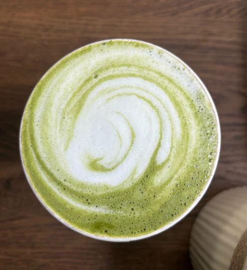
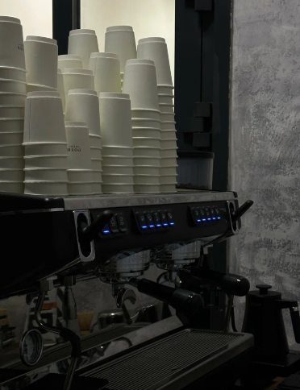
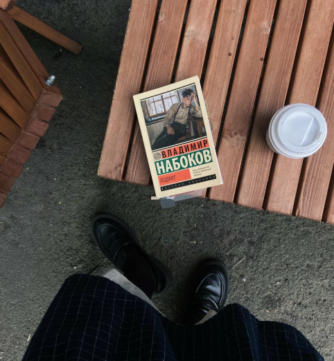
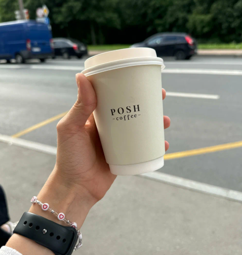
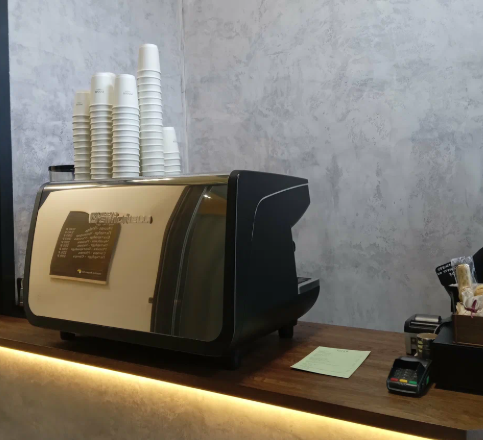
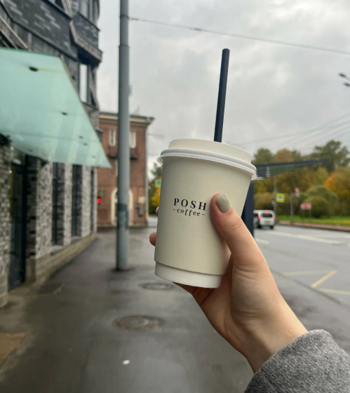

Posh Coffee
СПБ, Волковский проспект, 6, (м. Волковская)
Варим кофе для своих, печем булочки и создаем уют каждый день.
Найти на картеОчень классная кофейня из-за своего вкусного кофе и приятного приветливого бариста) Пью кофе только на растительном молоке...
Самый вкусный капучино за последнее время ❤️✨ с мятным сиропом попробуйте - не пожалеете!
Замечательная кофейня, самая вкусная матча, очень нравится. Бариста приятные и приветливые люди!
Самая лучшая кофейня в округе, приятная атмосфера, бариста Ангелина варит самый вкусный кофе.
Безумно вкусный кофе и приятный персонал!) Давно не получала такого удовольствия от напитка. 🥰❤️
Часто захожу сюда, всегда вкусно, бариста вежливые, доброжелательные, всегда учитывают пожелания 🌞





